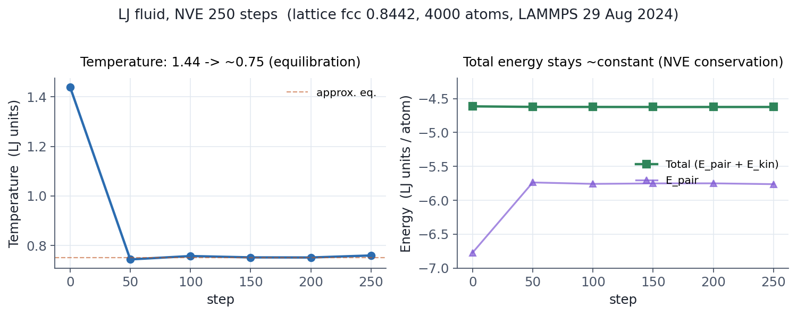

1.1 LAMMPS란
LAMMPS는 Sandia 국립연구소가 1990년대 후반부터 개발해온 범용 분자동역학 시뮬레이션 패키지입니다. 원자, 입자, 거대 분자, 메타입자 등 다양한 "점 입자" 시스템을 다룰 수 있으며, 특히 다음과 같은 점에서 강점이 있습니다.
- 확장성: 같은 입력 스크립트를 노트북 한 대부터 수만 코어 슈퍼컴퓨터까지 거의 그대로 사용할 수 있습니다. 코드 자체가 MPI 기반으로 설계되었습니다.
- 모델 다양성: Lennard-Jones, EAM, Tersoff, ReaxFF, OPLS, AMBER, CHARMM, COMPASS, MEAM, machine learning potential 등 수십 종의 상호작용 모델을 내장 또는 외부 패키지로 지원합니다.
- 활발한 사용자 커뮤니티: 공식 매뉴얼은 1500쪽이 넘고, 포럼(lammps.org/forum.html)에는 매일 새로운 질문과 답변이 올라옵니다.
본 가이드는 LAMMPS를 처음 설치하고 첫 입력 스크립트를 돌리는 단계부터 시작합니다.
1.2 설치 확인
LAMMPS는 다음과 같이 여러 경로로 설치할 수 있습니다.
| OS / 환경 | 가장 빠른 설치 방법 |
|---|---|
| Linux (Ubuntu/Debian) | sudo apt install lammps |
| Linux (Conda) | conda install -c conda-forge lammps |
| macOS (Homebrew) | brew install lammps |
| Windows | WSL2 후 Ubuntu 방식 또는 공식 바이너리 (lammps.org/download.html) |
| HPC / 워크스테이션 | module load lammps 또는 소스 빌드 |
소스에서 직접 빌드하면 어떤 패키지를 포함할지 세밀하게 조절할 수 있지만, 입문 단계에서는 패키지 매니저 설치만으로 충분합니다.
설치가 끝나면 터미널에서 다음을 실행해 보십시오.
lmp -h
도움말 메시지가 출력되면서 빌드에 포함된 패키지 목록이 보이면 설치가 정상입니다.
실행 파일의 이름은 빌드 방식에 따라 lmp, lmp_serial, lmp_mpi,
lmp_<machine> 등으로 달라질 수 있으니, 설치 후 자신의 환경에서 사용 가능한
이름을 한 번 확인해 두시기를 권합니다.
소스 빌드의 경우 보통 lmp_mpi(MPI 빌드)와
lmp_serial(직렬 빌드)이 함께 생성됩니다.
이후 본 가이드에서는 일관되게 lmp 라고 쓰지만,
자신의 환경에 맞는 이름으로 바꿔서 읽으시면 됩니다.
1.3 첫 시뮬레이션 — Lennard-Jones 액체
가장 단순한 LAMMPS 시뮬레이션은 Lennard-Jones(LJ) 입자들로 이루어진 액체입니다. 원자 종류는 한 가지, 상호작용은 LJ 한 가지뿐이고, 단위계도 환원 단위(reduced units)를 쓰기 때문에 외부 데이터 파일이나 힘장 라이브러리가 전혀 필요 없습니다.
다음 내용을 in.lj 라는 파일로 저장하십시오.
# in.lj — 가장 단순한 Lennard-Jones 액체
units lj
atom_style atomic
lattice fcc 0.8442
region box block 0 10 0 10 0 10
create_box 1 box
create_atoms 1 box
mass 1 1.0
pair_style lj/cut 2.5
pair_coeff 1 1 1.0 1.0 2.5
velocity all create 1.44 87287 loop geom
neighbor 0.3 bin
neigh_modify every 20 delay 0 check no
fix 1 all nve
thermo 50
run 250
이 스크립트는 fcc 격자로 4000개 LJ 입자를 만들고, 초기 속도를 무작위로 부여한 뒤 NVE 앙상블에서 250 스텝 동안 적분합니다.
실행은 다음과 같이 합니다.
# 직렬 실행 (1 코어)
lmp -in in.lj > out.lj
# 병렬 실행 (4 코어)
mpirun -np 4 lmp -in in.lj > out.lj
-in in.lj 가 권장될까
매뉴얼은 lmp -in in.lj 형태를 권장합니다.
lmp < in.lj 처럼 표준 입력으로 넘기는 방식도 동작하지만,
mpirun 또는 mpiexec 로 병렬 실행할 때
리디렉션 연산자가 일부 환경에서 제대로 동작하지 않기 때문입니다.
1.4 출력 결과 살펴보기
실행이 끝나면 out.lj 라는 출력 파일과 log.lammps 라는 로그 파일이
생성됩니다. 둘 다 텍스트 파일이므로 일반 에디터로 열 수 있습니다.
out.lj 의 끝부분을 보면 다음과 같은 형태의 표가 있습니다 (아래는 본 가이드를
작성하며 LAMMPS 29 Aug 2024로 동일 입력을 실제 직렬 실행해 얻은 결과입니다).
Step Temp E_pair E_mol TotEng Press
0 1.4400 -6.7733681 0 -4.6139081 -5.0199732
50 0.7437 -5.7370606 0 -4.6218173 0.3080484
100 0.7572 -5.7581426 0 -4.6226965 0.2085022
150 0.7518 -5.7510464 0 -4.6235610 0.2270706
200 0.7514 -5.7500924 0 -4.6232753 0.2536280
250 0.7595 -5.7621762 0 -4.6231440 0.2172998
Loop time of 0.306876 on 1 procs for 250 steps with 4000 atoms
Step 은 시뮬레이션 스텝 번호, Temp 는 온도, TotEng 은 총 에너지(kinetic + potential)
입니다. 초기에 1.44 였던 온도가 빠르게 0.75 부근으로 떨어지면서 평형에 도달하는
것을 볼 수 있는데, 이는 NVE 앙상블에서 초기 격자가 풀어지면서 운동에너지가
포텐셜에너지로 분배되는 자연스러운 현상입니다. 동시에 TotEng 은 약 −4.6231
부근에서 거의 일정하게 유지되어, NVE 적분이 에너지를 잘 보존하고 있음을
확인할 수 있습니다 — NVE를 첫 시뮬레이션으로 자주 돌리는 이유가 바로 이
점검 때문입니다.
마지막 줄의 Loop time 은 시뮬레이션이 소요한 wall-clock 시간으로,
LAMMPS 성능 진단의 출발점입니다. 코어 수나 시스템 크기를 바꿔 가며 이
값이 어떻게 변하는지 보는 것이 가장 단순한 성능 감각 익히기입니다.
위 표는 본 가이드를 작성하며 동일한 입력 파일을 LAMMPS 29 Aug 2024 (conda-forge 빌드, 직렬)로 실제 실행해 얻은 값입니다. 자기 환경에서 같은 스크립트를 돌리면 마지막 자리 부동소수점은 약간 다를 수 있어도 스텝별 거동(온도가 1.44 → 0.75 부근으로 떨어지며 총 에너지 보존)은 동일하게 재현되어야 합니다. 재현이 안 된다면 입력에 오타가 있거나 LAMMPS 버전이 매우 오래된 경우일 가능성이 높습니다.

1.5 다음 단계
이번 장에서는 LAMMPS 실행 방법과 가장 단순한 입력 스크립트의 형태만 훑어보았습니다. 다음 장에서는 이 스크립트를 한 줄 한 줄 뜯어보며, LAMMPS 매뉴얼이 정의하는 입력 스크립트의 4단계 표준 구조를 살펴봅니다.